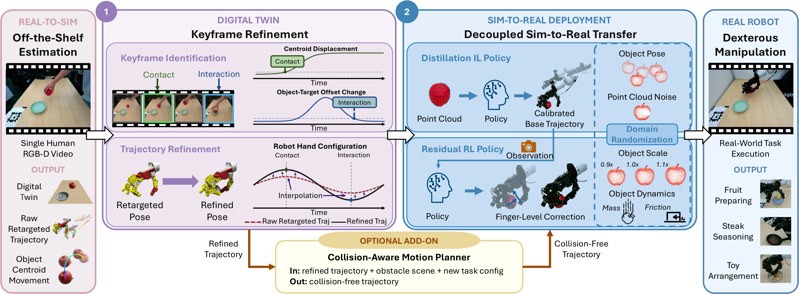
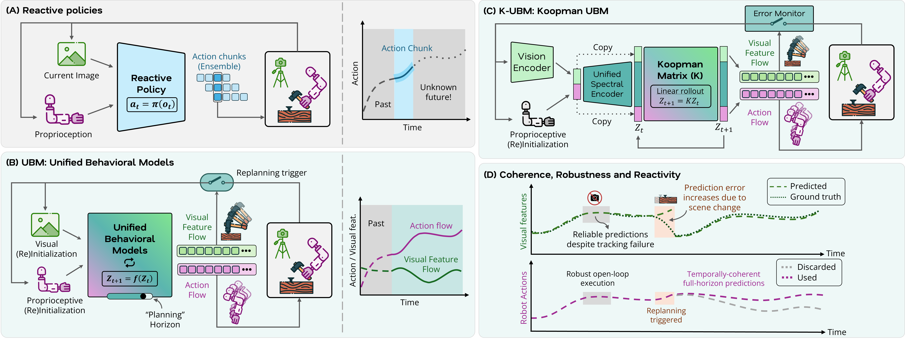
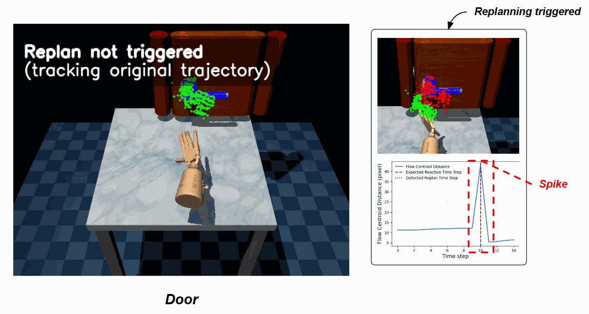

Translate site workflows, operational constraints, and issue reports into robot behavior changes, deployment plans, and technical actions.
U.S. Technical Lead at Wellwit Robotics
Robotics systems in the real world.
I work across mobile robotics, robot learning, and industrial automation, with a focus on AMR/AGV deployment, customer-site integration, debugging, and systems that hold up in real facilities.
Currently at Wellwit Robotics, I focus on North America technical execution for warehouse automation. I received my M.S. in Computer Science from Georgia Tech in May 2026, with robotics research experience in robot learning and dexterous manipulation.



Working Stack
Where I spend my time
Mobile robot integration, warehouse automation, commissioning, debugging, and support across real facilities.
Research experience in dexterous manipulation, visuomotor behavior models, simulation, and sim-to-real transfer.
Technical ownership mindset: fast diagnosis, clear evidence, reproducible logs, and communication across customers, engineering, and operations.
Project Dossier
Robotics projects with deployable instincts
{kind=link}
Motion Lab
Robots should move before they persuade.
Local clip
In-hand rotation
Video2Sim2Real
Human video to robot
Video2Sim2Real
Real-world task clip
K-UBM
Policy comparison

K-UBM
Replanning under disturbance
Operations Log
The thread through the work
U.S. Technical Lead, Wellwit Robotics
Mobile robotics, robot learning, industrial automation, warehouse AMR/AGV deployment, customer-site integration, and North America technical execution.
Georgia Tech MSCS and STAR Lab
Robot learning, dexterous manipulation, visuomotor behavior models, simulation, and real-time robotic execution.
Robotics solutions and regional ownership
Build toward technical ownership for North America projects: evidence-driven support, deployment discipline, and systems that customers can trust.